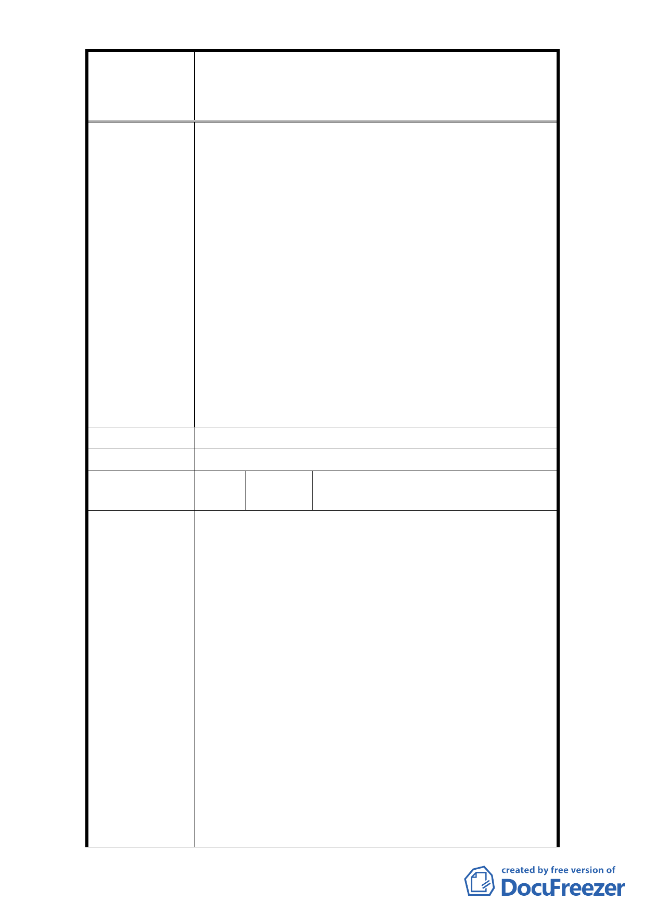

修訂臺北市大安區青田街保存區聚落風貌保存專用區細部計
案
名
畫、變更部分第三種住宅區、第三種商業區(特)為第三種住宅區
(特)(日式宿舍)及第三種商業區(特)(日式宿舍)暨劃定週邊地
區都市設計管制細部計畫案
的公有地產權者換地，給主張都更的居民也有電梯
公寓可以住。例如被古蹟、歷史建物夾在中間的私
有地，可以在不遠巷道換地都更（給予公有地產權
者換地的獎勵容積）。
4. 反對刪除「保留一定大小前院」之限制。
5. (1)尊重原住戶意願，不作過度開發。(2)結合社區
力量改善荒廢房舍(社區改造)。(3)相信若為陸客自
由行的重點區域，則這些傳統舊式日式建築，更能
突顯臺灣的過往的足跡。
6. (1)希望政府規劃設置文人舊居散步以及舊居修
復，(2)與 NGO 合作不用花大錢即可改善空間。(3)
閒置宿舍不要拆，可規劃青田街的閒置日式宿舍空
間再利用方案提供 NGO、弱勢團體作為辦公室、開會
空間。(4)保護老樹，而非砍伐。
市 府 回 覆 意 見 同編號 27 回覆意見。
委 員 會 決 議 同編號 27 決議。
編
號 30
陳情人
鄭如珊、王昕馨、李俊儀、張香妹、
賴慧玲、沈慧城、陶曉清
1. (1)青田街一帶具有許多充滿文化價值的歷史建
物，塑造出獨特氛圍，一旦遭到破壞非常可惜且造
成不可逆的惡果，因此強烈建議不值得為了短期利
益而捨棄此區域的文化價值。(2)保護文物，著重水
土保持。(3)街道一定要退縮，路樹才有生長的空
間。(4)青田街之美與珍貴，就在綠樹與民房相依相
映，若樹木不在，房樓高聳，青田街也將不再是青
田街，不可不慎為之！(5)綠樹很重要！不可以不留
陳 情 理 由 院深以及變更開挖率。
2. (1)從台北市舉辦國際性花博大型活動開始，不是宣
誓了台北即將跨入綠色城市的世界潮流之中。面對
現在房市都更議題與綠色產業發展之際，讓綠色的
精神落實於施政方向之中，也是政府與人民眾所矚
目。(2)綠色，不是單純只是植栽園藝、節能減碳或
是再生回收。廣義來說，歷史與生活記憶也可以是
綠色的。城市是生命的載體，斯於生活，產生種種
的記憶，有家人、有朋友、有建築也有街道。但是
- 37 -